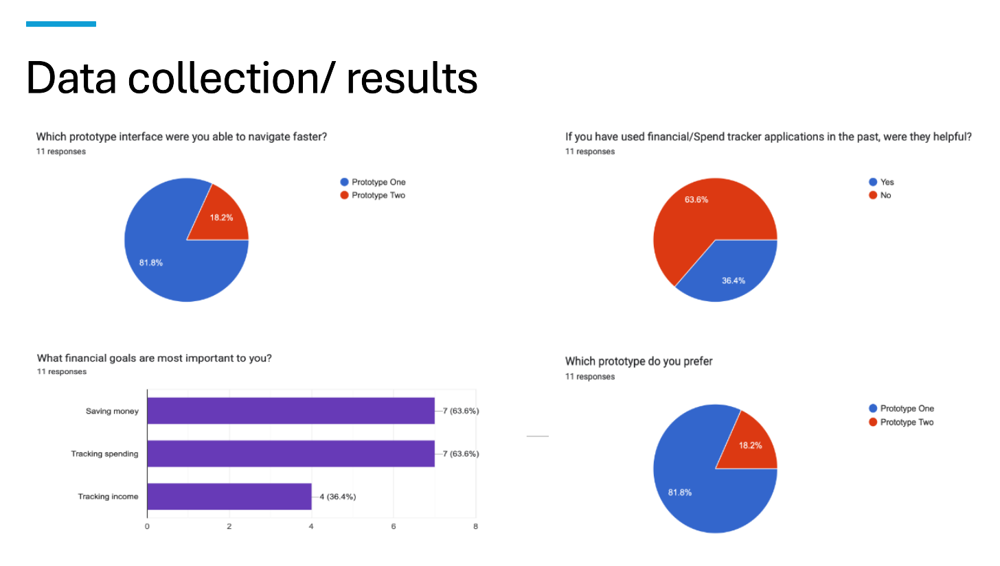

About Me
Hello! My name is Anthony Gonzales.
I'm currently studying Computer Science at New Mexico State University
and am expected to graduate Fall 2024.
I am also currently employed full time at CSL Plasma
as a Quality Training Specialist,
and am hoping to transition into a software developer field.
I'm an eager learner and tech enthusiast.
I am looking for a role that utilizes my experience
within the software developing world
and am ready and willing to gain more experience
in a real world, day-to-day environment.
Experience
Quality Training Specialist
CSL Plasma, Las Cruces, NM | August 2021 ‐ Present
- Responsible for coordinating and managing training activities, policies and processes at the center level and New Hire Orientation.
- Maintain and review Plasma Center personnel training records to ensure compliance with CSL procedures, SOPs, CLIA/COLA and other applicable requirements.
- Collaborates with center management when viewing the Quality Management System to identify, coordinate and deliver retraining for the purpose of correcting or improving operational or quality issues.
- Also inherits the full job description of a Quality Specialist.
Quality Specialist
CSL Plasma, Las Cruces, NM | May 2020 ‐ August 2021
- Ensure center records QA review to ensure thoroughness, accuracy, and timeliness of required information. Initiate investigation and ensure documentation of regulatory deficiencies. Determine the need for corrective action, ensure appropriate documentation and determine effectiveness of the action.
- Collaborate with Assistant Quality Manager (AQM), to be able to represent the center during internal and external audits, responds to questions from auditors, and may stop operations, including shipments to address quality concerns.
- Responsible to initiate, investigate and close Track Wise reports in a timely manner. Confirm through follow-up, to ensure appropriate corrective action was initiated, implemented, and effective.
- Follow all Standard Operating Procedures (SOPs), company policies and procedures.
Plasma Center Floater
BPL Plasma, Las Cruces, NM | August 2017 ‐ May 2020
- Phlebotomy: Responsible for the efficient and effective collection of plasma from donors by performing venipuncture, monitoring the pheresis process and following Standard Operating Procedures (SOPs).
- Reception Technician: Responsible for greeting donors at the plasma collection center and conducting a series of registration procedures to verify donor suitability for the plasma pheresis process.
- Processing Technician: Responsible for the accurate and timely sampling, testing, shipping and storage of plasma collected from donors.
Education
Bachelor’s in Computer Science
- New Mexico State University, Expected Graduation ‐ Fall 2024
Bachelor’s in Psychology
- New Mexico State University
High School Diploma
Cash Flow Project
For our senior project, my group and I created an application called Cash Flow.
A lot of my coworkers look at their bank account, a few days after receiving their check
and exclaim out loud, “Where is all my money going?!”
Our research topic will revolve around applications that perform the task
of finance tracking and have an emphasis on spending tracking.
The importance of this topic is to help users budget better
and have a tool that will show them where their spending is going,
so that they can adjust said spending accordingly.
Our group had 12 user studies for the first prototype and another 12 for the second prototype.
Between the two options, users preferred the prototype that allowed them to sign into their bank account
via the application Plaid. We gave each user a 26 question form that provided feedback about the prototypes.
Pictured below are a few of the questions and responses that we found to be most significant.
Along from this questionnaire, we discovered that most of the users had not used similar finance
or spending tracking applications.
Our users also let us know that there is an equal interest in both saving money as well as tracking their expenditures.

The improvement expected through our design is to try and clean up the interface
and overall usability of a finance tracking type of application.
Furthermore, in lieu of our application being a catch all for finance tools,
we want to focus on the spending tracking aspect of it.
We plan on having a visual tool to show you categories of where the user’s spending is going;
then if they want more detailed information (in terms of spending) for a specific category,
our application will break down their spending for each category.